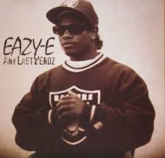

Eric Lynn Wright, better known as Eazy-E, was born on September 7, 1964, in Compton, California. He grew up in a challenging environment and became involved in street life before turning to music, which allowed him to share his experiences through rap. Eazy-E rose to fame as a founding member of N.W.A, one of the most influential hip-hop groups of the late 1980s. Known for his distinctive voice and raw lyrics, he helped popularize gangsta rap, bringing attention to the struggles of life in South Central Los Angeles. Hits like “Boyz-n-the-Hood” and albums such as Straight Outta Compton made him a central figure in hip-hop history.
Aside from performing, Eazy-E founded Ruthless Records, launching the careers of many West Coast rap artists. He was known for his business acumen as well as his musical talent. Eazy-E's life was cut short when he died from complications of AIDS on March 26, 1995. Despite his early death, his influence on rap music and hip-hop culture remains significant, earning him the title of the “Godfather of Gangsta Rap.”